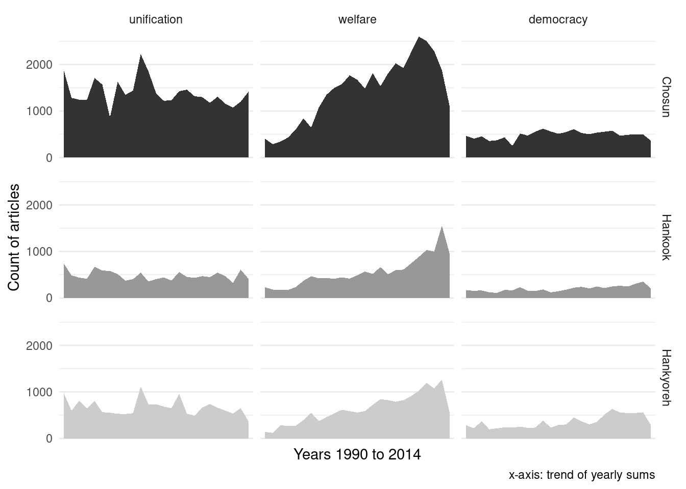
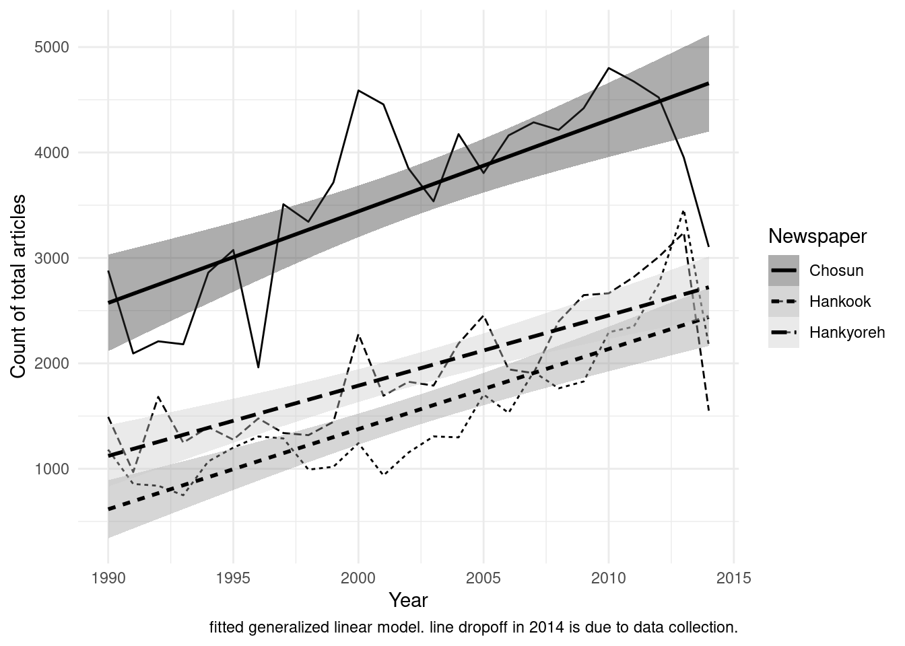

Load libraries
library(lubridate)
library(ggplot2)
library(dplyr)
library(tidytext)
library(quanteda)Load the data
data_count <- readRDS("data/data_count_yearly")Trends of all keywords
x <- data_count %>%
filter(Keyword %in% c("unification", "welfare", "democracy")) %>%
mutate(Keyword = recode(Keyword, econdem = "economic\ndemocratization")) %>%
mutate(Keyword = forcats::fct_reorder(Keyword, desc(n))) %>%
ggplot(aes(Date, n, fill = Newspaper)) +
geom_area() +
labs(x = "Years 1990 to 2014",
y = "Count of articles",
caption = "x-axis: trend of yearly sums") +
scale_fill_grey() +
facet_grid(Newspaper~Keyword) +
theme_minimal() +
theme(plot.subtitle = element_text(hjust = 0.5),
legend.position = "none") +
scale_x_discrete(breaks = c("1990", "2014"))
x
# ggsave("plots/3_method_keywords.jpg", width=6, height=4, dpi = 300)Total trend of news article volumes
x <- data_count %>%
group_by(Date, Newspaper) %>%
summarise(total_n = sum(n)) %>%
ggplot(aes(Date, total_n, linetype = Newspaper)) +
geom_line() +
geom_smooth(method = glm, aes(fill = Newspaper), colour="black") +
labs(x = "Year",
y = "Count of total articles",
caption = "fitted generalized linear model. line dropoff in 2014 is due to data collection.") +
scale_fill_grey() +
theme_minimal()
x
ggsave("plots/3_method_newspapers.jpg", width=7, height=5, dpi = 300)